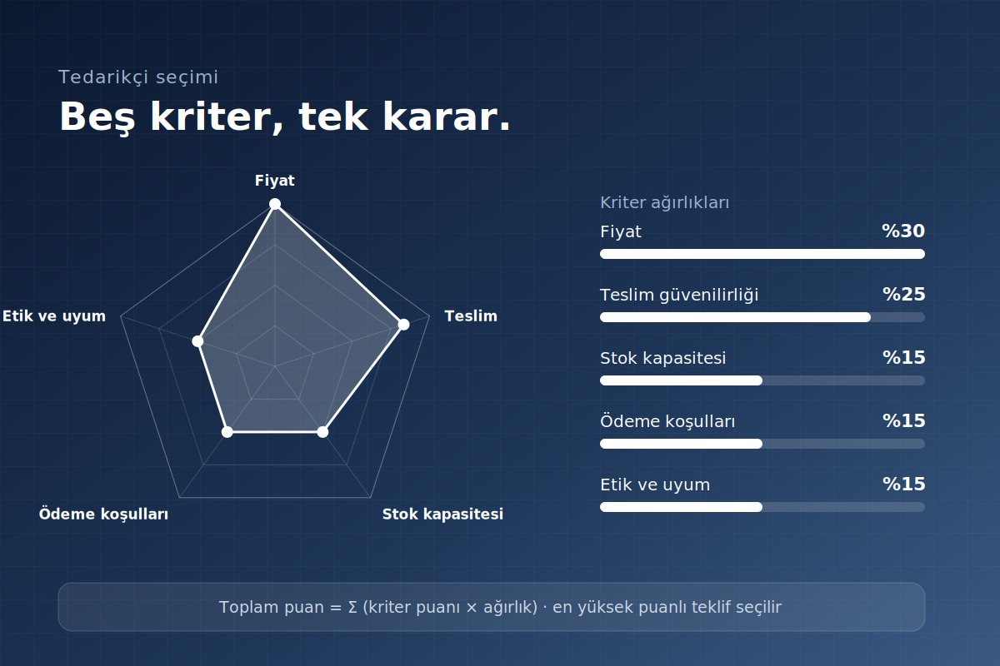
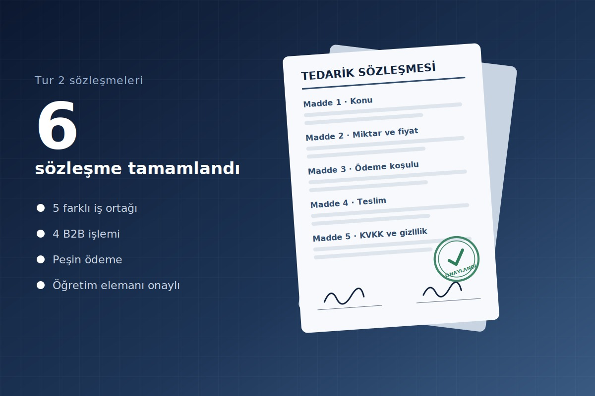

💵
Peşin Ödeme
Sözleşme onayı ve teslimle eş zamanlı ödeme. Liste fiyatı üzerinden işlem yapılır, tahsilat riski yoktur.
- Vade farkı yok
- Tur 2’de işlemlerin tamamı bu yöntemle yapıldı
Tedarikçi seçimi, ödeme koşulları, sözleşmeler ve risk matrisi.

Tedarikçileri tek başına fiyata göre değil, beş ölçütün ağırlıklı puanına göre seçeriz. Her bileşen için teklifler karşılaştırılır; en az üç farklı şirketle çalışmak hedefimizdir.
30 Eylül – 1 Ekim arasında sözleşme yaptığımız şirketler.
| Şirket | Ürün / hizmet alanı | Durum |
|---|---|---|
| FormAmbalaj A.Ş. | G04 – Kasa ve Ambalaj | Sözleşme tamamlandı |
| EnerjiNova A.Ş. | G01 – Enerji Modülü | Sözleşme tamamlandı |
| SensoTek A.Ş. | G03 – Sensör Kiti | Sözleşme tamamlandı |
| MikroCore Teknoloji A.Ş. | G02 – İşlemci Modülü | Sözleşme tamamlandı |
| GüvencePlus Hizmetleri A.Ş. | G08 – Garanti Hizmet Paketi | Sözleşme tamamlandı |
| BulutOS Yazılım A.Ş. | G05 – Yazılım Lisansı | Sonraki turda değerlendirilecek |
| HızlıRota Lojistik A.Ş. | G06 – Lojistik Tokenı | Sonraki turda değerlendirilecek |
İki seçenek sunarız: peşin (tercih edilen) ve yazılı sözleşmeye bağlı vadeli ödeme.
Sözleşme onayı ve teslimle eş zamanlı ödeme. Liste fiyatı üzerinden işlem yapılır, tahsilat riski yoktur.
Teslimden sonra sözleşmede yazılı tarihte (en geç bir sonraki tur başında) ödeme. Yönetim ve finans onayı gerekir.
| Koşul | Peşin | Vadeli |
|---|---|---|
| Ödeme zamanı | Sözleşme ve teslim anında | Teslimden sonra, en geç bir sonraki tur başında |
| Birim fiyat | Liste fiyatı (fiyat listesi) | Liste fiyatı + %5 vade farkı |
| Onay | Öğretim elemanı onayı | Yönetim ve finans onayı + yazılı sözleşme |
| Risk | Düşük | Tahsilat gecikme riski (bkz. R3) |
Her B2B tedarik ve satış işlemi yazılı sözleşmeyle yapılır; taraflar konu, miktar, fiyat, ödeme, teslim ve veri koruma şartlarında anlaşır. Tur 2’de bu süreci eksiksiz uyguladık.

Sözleşmelerimizde kullandığımız standart maddeler.
Operasyonel, finansal ve tedarik zinciri risklerimiz ile aldığımız önlemler. Skor = olasılık × etki (her biri 1–3).
Isı haritasındaki kodlar aşağıdaki tabloda açıklanan risklere karşılık gelir. Sağ üst köşeye yaklaşan riskler olasılığı ve etkisi yüksek olduğu için öncelikle ele alınır.
1–2 Düşük 3–4 Orta 6–9 Yüksek
| Kod | Risk | Olasılık | Etki | Skor | Önlem | Sorumlu |
|---|---|---|---|---|---|---|
| R1 | Tedarikçinin stok veya teslim gecikmesi | 2 | 3 | 6 · Yüksek | En az 3 farklı tedarikçiyle çalışmak, yazılı teslim tarihi; acil tedariki son çare olarak kullanmak. | Tedarik |
| R2 | B2B pazar fiyatlarında dalgalanma | 3 | 2 | 6 · Yüksek | 50–75 TL fiyat bandı, maliyet ve talep analiziyle fiyat güncelleme. | Finans |
| R3 | Vadeli satışta tahsilat gecikmesi | 2 | 2 | 4 · Orta | Peşin ödemeyi tercih etmek; vadeli işlemde yazılı sözleşme, vade farkı ve yönetim onayı. | Finans |
| R4 | Üretim kapasitesinin talebi karşılayamaması | 1 | 3 | 3 · Orta | Tur başı kapasite planı, endüstriyel üretim hattı ve stok takibi. | Operasyon |
| R5 | Stok kaydı hatası veya veri kaybı | 1 | 2 | 2 · Düşük | SQL işlem kontrolü (stok sıfırın altına düşemez), hareket kaydı ve düzenli yedek. | BT ve Veri |
| R6 | KVKK / veri etiği ihlali | 1 | 3 | 3 · Orta | Veri amacı, açık rıza, saklama ve silme politikaları; düzenli etik denetim. | Risk ve Etik |
| R7 | Web sitesi veya hizmet kesintisi | 2 | 1 | 2 · Düşük | HTTPS barındırma, düzenli erişim kontrolü ve yedek yayın. | BT ve Veri |
| R8 | Sözleşme şartlarına uyulmaması | 1 | 2 | 2 · Düşük | Yazılı sözleşme, öğretim elemanı onayı ve işlem kaydı. | Yönetim |